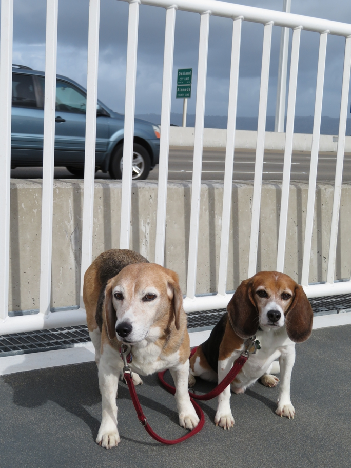

<--Previous Up Next-->

On the Bay Bridge pedestrian path. When this photo was taken, Huxley and Wallace had already walked to the Alameda County line, completing Huxley's walk on every street in San Francisco.
Huxley Beagle Wallace Beagle